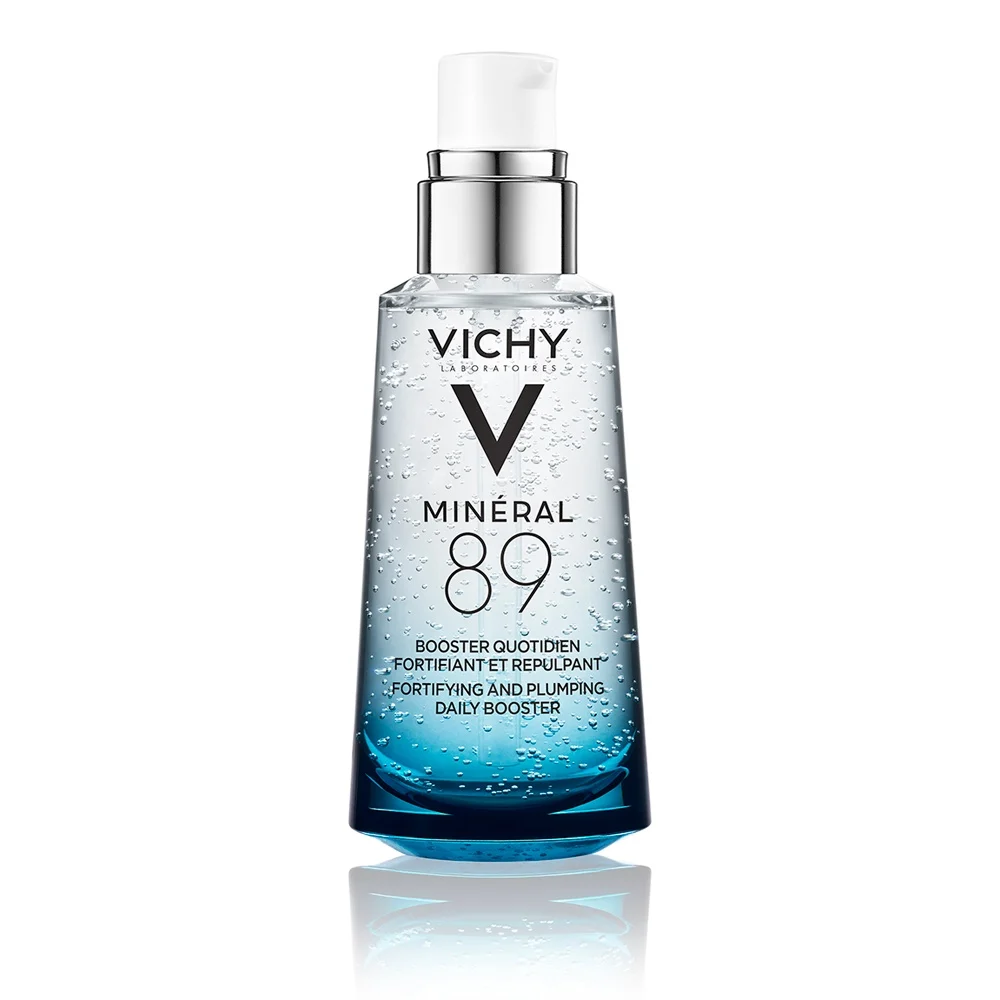

Vichy Minéral 89 Booster Hidratant: Doza zilnică de fortifiere și hidratare pentru pielea ta
Analizăm cum acest gel-booster cult, cu o concentrație de 89% Apă Vulcanică Vichy și Acid Hialuronic, reușește să întărească bariera cutanată, să protejeze tenul împotriva stresului urban și să ofere o hidratare intensă, lăsând pielea plină de volum și luminoasă.

Vichy Liftactiv Specialist B3 Serum
Doza zilnică de energie pentru pielea deshidratată și stresată. Află cum formula Vichy Minéral 89, cu 89% Apă Vulcanică și Acid Hialuronic, fortifică bariera cutanată, elimină senzația de strângere și oferă tenului un aspect plin de volum, strălucitor și protejat împotriva factorilor externi.
Textura și prima utilizare
Spre deosebire de serurile dense sau uleioase, Minéral 89 are o textură de gel transparent, extrem de lejeră și răcoritoare. Se absoarbe instantaneu în piele, fără a lăsa nicio urmă lipicioasă sau luciu rezidual.
Încă de la prima aplicare, senzația de strângere dispare, fiind înlocuită de un confort imediat. Datorită formulei sale minimaliste, servește ca un „pre-ser” perfect, pregătind tenul pentru aplicarea cremei hidratante sau a machiajului, facilitând întinderea uniformă a acestora.
Analiza compoziției: Ce conține?
Formula este un etalon al minimalismului, conținând doar 11 ingrediente. Vedeta este **Apa Vulcanică Vichy în concentrație de 89%**, bogată în 15 minerale esențiale care fortifică bariera naturală a pielii și o ajută să reziste agresiunilor externe.
Această bază minerală este combinată cu **Acid Hialuronic de origine naturală**, care acționează ca un magnet pentru umiditate, reținând apa în țesuturi. Absența parfumului și a alcoolului face ca acest booster să fie extrem de sigur chiar și pentru cel mai reactiv ten.
Fortifiere și volum natural
Diferența principală a Vichy Minéral 89 este capacitatea sa de a „reîncărca” pielea cu energie. Nu doar hidratează suprafața, ci tonifică și oferă un aspect plin (plumping), făcând fața să pară mai odihnită și mai elastică.
Este scutul ideal pentru locuitorii orașelor din România, unde poluarea, stresul și oboseala tind să fragilizeze pielea. Utilizat zilnic, acesta transformă tenul tern și deshidratat într-unul vizibil mai rezistent, sănătos și plin de vitalitate.
Analiza compoziției: Cum fortifică pielea acest booster?
Formula este un etalon al minimalismului dermatologic, conținând doar 11 ingrediente esențiale. Jucătorul cheie este **Apa Vulcanică Vichy în concentrație de 89%**, care infuzează pielea cu 15 minerale rare, reconstruind bariera de protecție și echilibrând pH-ul natural.
Această bază minerală este potențată de **Acid Hialuronic de origine naturală**, care acționează ca un rezervor de umiditate. Împreună, aceste componente creează o rețea de hidratare care „umple” liniile fine cauzate de deshidratare și redă tenului un aspect plin, proaspăt și odihnit.
Cui NU i se potrivește?
Datorită formulei sale hipoalergenice, fără parfum și fără alcool, Vichy Minéral 89 este compatibil cu aproape toate tipurile de ten, inclusiv cel mai sensibil. Totuși, persoanele cu **ten extrem de uscat (alipic)** ar putea simți că textura de gel nu oferă suficienți nutrienți lipidici.
În acest caz, boosterul nu trebuie folosit singur, ci ca un prim pas sub o **cremă hidratantă bogată**. De asemenea, dacă aveți o sensibilitate rară la acidul hialuronic, testați produsul pe o zonă mică a pielii înainte de aplicarea completă pe toată fața.
Trick util: Regula „Pielii Umede”
Acidul hialuronic funcționează cel mai bine atunci când are umiditate de care să se „agațe”. Pentru rezultate maxime, **aplicați Minéral 89 pe fața ușor umedă**, imediat după spălare sau după pulverizarea unei ape termale.
Acest mic secret ajută boosterul să atragă și mai multă apă în straturile epidermei, eliminând instantaneu senzația de strângere. Este pasul esențial în rutina de dimineață în România, mai ales în perioadele cu vânt rece sau în verile caniculare, când pielea tinde să se deshidrateze rapid.
Întrebări frecvente
Poate înlocui acest booster crema hidratantă obișnuită?
Vichy Minéral 89 este un **booster de hidratare**, nu o cremă. Pentru tenul gras, poate fi suficient vara, dar pentru restul tipurilor de ten, se recomandă aplicarea unei creme hidratante după booster pentru a „sigila” umiditatea în piele.
Este sigur pentru utilizare în zona conturului ochilor?
Da, spre deosebire de serurile cu acizi, **Minéral 89 este testat oftalmologic** și are o formulă minimalistă, fiind sigur și eficient pentru hidratarea zonei delicate din jurul ochilor și a buzelor.
Pot folosi Minéral 89 împreună cu seruri cu Vitamina C sau Retinol?
Absolut. Acesta este un produs de bază excelent. Se aplică ca **prim pas după curățare**, pregătind pielea și reducând potențialul iritant al ingredientelor active puternice, cum sunt retinoizii sau acizii exfoliante.
De ce este importantă concentrația de 89% apă vulcanică?
Această concentrație record infuzează pielea cu **15 minerale esențiale**. Spre deosebire de apa obișnuită, aceasta fortifică bariera cutanată, echilibrează pH-ul și ajută pielea să devină mai rezistentă la factorii de stres externi (poluare, oboseală).